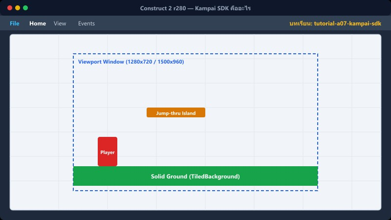
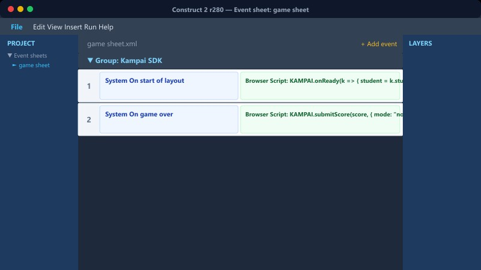
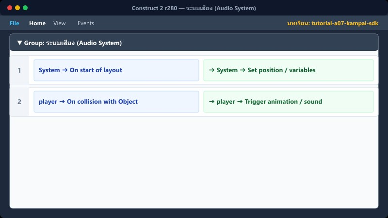

บทที่ A7 • Construct 2 ขั้นสูง (โบนัส)
เชื่อมต่อกับ Kampai SDK
API ของโรงเรียนคำไผ่ • การดึงข้อมูลนักเรียน • การส่งคะแนนและระบบเสียง
Export HTML5→เพิ่ม Script SDK→ดึงข้อมูล & ส่งคะแนน→ทดสอบบน Portal
1Kampai SDK คืออะไร

/games/kampai-sdk.js คือระบบที่เชื่อมเกมของคุณเข้ากับ Portal ของโรงเรียนคำไผ่ มันทำให้เกมมีข้อมูลนักเรียน, บันทึกคะแนนอัตโนมัติ, สร้างกระดานอันดับ (Leaderboard) และมีระบบเสียงมาตรฐานครบถ้วน
โดยใช้ตัวแปร window.KAMPAI เป็น API หลักในการสั่งงานต่างๆ
📍 ที่ไหนใน C2: ไม่มีใน C2 แต่ต้องเพิ่มในไฟล์ index.html หลังจากที่ Export แล้ว
2เตรียมไฟล์ HTML

เมื่อสร้างเกมเสร็จ ให้ทำการ Export เป็น HTML5 จากนั้นเปิดไฟล์ index.html และเพิ่ม Script tag ก่อนปิด </body>
<!-- เพิ่มก่อนบรรทัด </body> -->
<script src="/games/kampai-sdk.js"></script>
<script>
KAMPAI.setSlug('your-game-slug');
KAMPAI.onReady(k => { console.log('พร้อม!'); });
</script>
📍 ที่ไหนใน C2: File → Export project → HTML5
3ดึงข้อมูลนักเรียน (Student Data)
ภายในฟังก์ชัน onReady(k) เราสามารถดึงข้อมูลต่างๆ ได้ผ่าน object k:
k.student: ข้อมูลนักเรียน (เช่น k.student.first_name, ชั้นปี, รูปโปรไฟล์)k.stats: สถิติเกมของนักเรียน (เช่น bestScore, playCount)k.leaderboard: ข้อมูล Top 5 อันดับของเกมนี้
นำข้อมูลเหล่านี้ไปแสดงผลในเกมแทนการใช้ TextBox ให้ผู้เล่นพิมพ์ชื่อเอง (เช่น แสดงต้อนรับตอนเริ่มเกม)
📍 ที่ไหนใน C2: ใช้ Browser plugin → Execute JavaScript เพื่ออ่านตัวแปร window.KAMPAI
4ส่งคะแนนอัตโนมัติ (Submit Score)
เมื่อเล่นจบเกม (ไม่ว่าจะผ่านด่านทั้งหมด หรือ Game Over) ให้ส่งคะแนนไปที่ระบบ:
KAMPAI.submitScore(คะแนนรวม, { mode: 'classic' });
SDK จะจัดการบันทึกและอัปเดต Leaderboard บน Portal ให้อัตโนมัติ (หมายเหตุ: การส่งคะแนนจะทำงานได้เมื่อรันบน Portal จริงเท่านั้น ไม่สามารถทดสอบบน localhost แบบเพียวๆ ได้)
📍 ที่ไหนใน C2: สร้าง Action "Browser: Execute Javascript" ตอนที่ผู้เล่นตายหรือชนะด่านสุดท้าย
5ระบบเสียง (Audio System)

SDK มีฟังก์ชันเรียกเสียงและเพลงที่พร้อมใช้งาน:
KAMPAI.sound.correct() / .wrong() - เสียงตอบถูก/ผิดKAMPAI.sound.timeUp() / .gameOver() - เสียงหมดเวลา/จบเกมKAMPAI.sound.speak(text, 'th') - Text-to-Speech อ่านโจทย์KAMPAI.sound.bgmStart() / .bgmStop() - คุมเพลงKAMPAI.mountToggles() - เสกปุ่มเปิด/ปิดเสียงบนจอ
6⚠️ สิ่งที่ต้องรู้ก่อน Deploy
- Verify Game: เกมต้อง pass pnpm verify:game ถึงจะอัปขึ้นระบบได้
- Database: ต้อง seed เกมลงใน educational_hub_items ด้วย SQL migration
- ขนาดภาพ: Cover image ต้องสัดส่วน 16:9 (1280×720 px)
- Standalone: ถ้าเล่นเกมแยกเดี่ยว จะไม่มี object KAMPAI ดังนั้นเกมต้องมี Fallback เพื่อไม่ให้พัง (ตรวจสอบ if (window.KAMPAI))